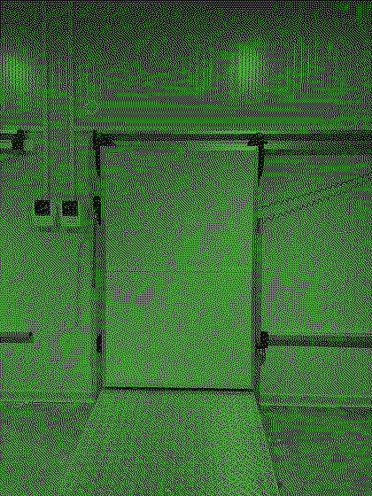
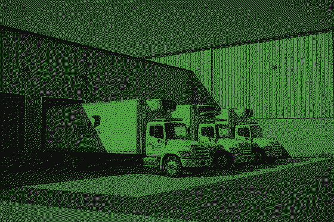
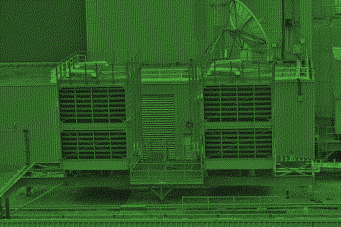
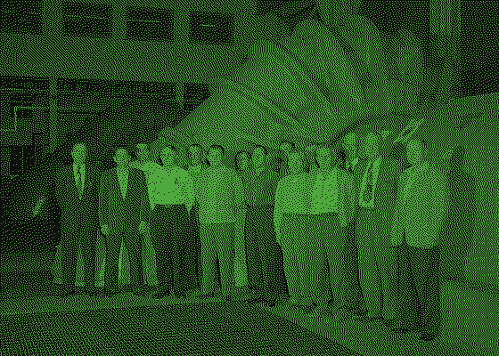
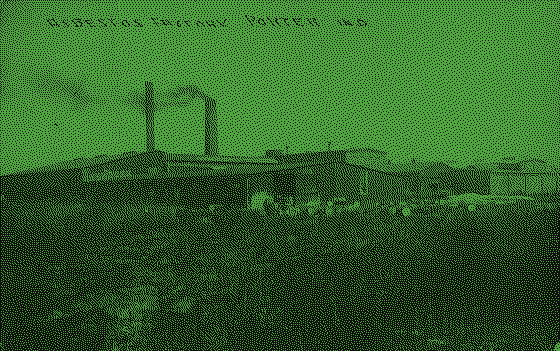

面板 1 · 主库
采样 02:14 · 探头 417028 · 三号库区 1 号门
- 压缩机
40min - 昨天多花
12min - 门开合
6x
档位 1–5
工号 5-07出厂 1984
冷库机组 K-3 · 三号库区 · 出厂 1984
Cold Storage Console · K-3
压缩机运行中 · 除霜 40 分钟一轮
3 号冷库现在是 −18.4℃，压缩机每 40 分钟除霜一次，昨天多花了 12 分钟。
八块面板按 5∶2∶1 分配面积：主库占 5 列，除霜占 2 列，告警只有 1 列却拉高两倍。每个读数都配着单位与采样时刻，绿字是漆在铁皮上的，不是浮在上面。
拨杆停在第 5 档：2 号库当前 −18℃，落位 120ms 后才改读数。
分区之间是 6px 凹槽：1px 上高光 #2A2E28、1px 下暗边 #050605。凹槽是挖出来的，不是卡片浮起来的；面板的立体感全靠这一组单向硬光源，全站没有圆角容器，也没有一处柔和投影。维护记录栏在 1440px 以上留在右侧 180px，1024–1439px 折为六面板时并入底部。
面板 1 · 主库
采样 02:14 · 探头 417028 · 三号库区 1 号门
40min12min6x档位 1–5
工号 5-07出厂 1984
面板 2 · 除霜
上一次除霜 01:36 结束，用时 6min40s。
工号 5-04校验 3
面板 3 · 告警
3 号库读不到数：探头 6 位编号没登记，或者那根 4 芯线在第 2 个接头处断了，错误码 E-114。先看 2 号库，别动压缩机。
工号 5-01校验 1
面板 4 · 2 号库
采样 02:14 · 探头 417021 · 门封条上月换过
40min-18C3x工号 5-11出厂 1984
面板 5 · 压缩机
11.4bar1.8bar41882h工号 5-08校验 2
面板 6 · 探头
这台机组还没接温度探头。把探头上那串 6 位编号抄进左边的格子，读数会在 30 秒内上来。
工号 5-06校验 5
面板 7 · 检修痕迹
1984-11-02 首次通电，K-3 铭牌铆接1996-07-19 换 2 号库门封条2011-03-08 四芯线第 2 接头返修2024-12-30 探头 417026 报废每块面板右下角刻着服务工号与出厂年份，工号末位是按面板编号算出的校验码——这台设备像真实的机器一样留着自己的检修痕迹，全站没有任何地方会校验它。
工号 5-09校验 4
面板 8 · 库区切换
切换库房时整块面板先全灭 120ms，再按 8ms 一行逐行显影，缓动 cubic-bezier(.4,0,.6,1)——像继电器吸合。
工号 5-12出厂 1984
冷库这个题材的六个面：门与控制器、库房与托盘、机组的排热端、压力表组的检修现场、1957 年机组值守的班次，以及 1911 年的生产线。六张照片在构建期做 Floyd–Steinberg 二值抖动，阈值取直方图 62% 分位，只保留漆面绿 #4FA83D 与铁皮底 #0E100D 两色，输出 PNG-8 四色调色板。




